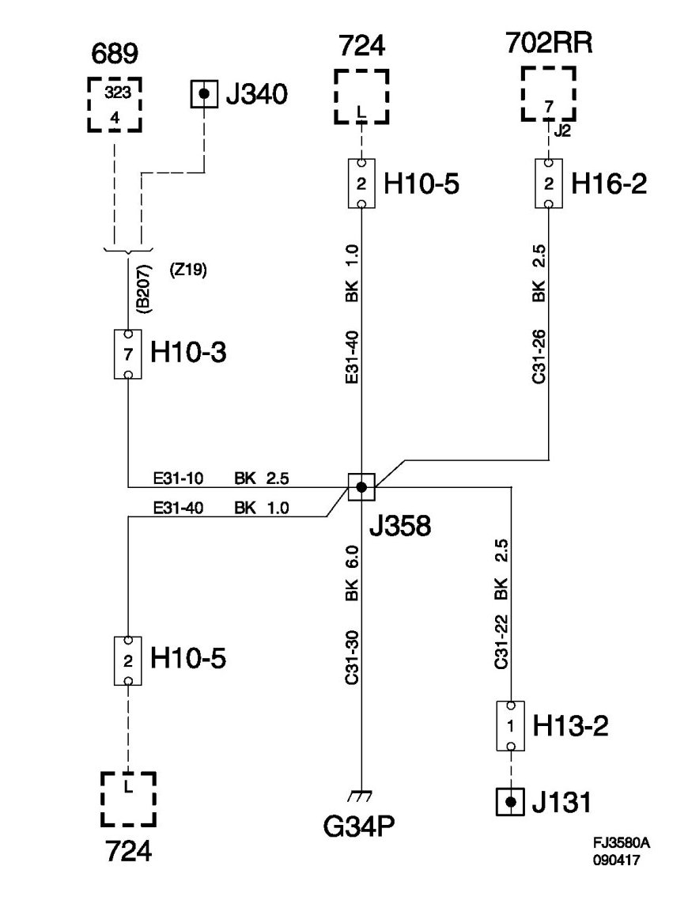
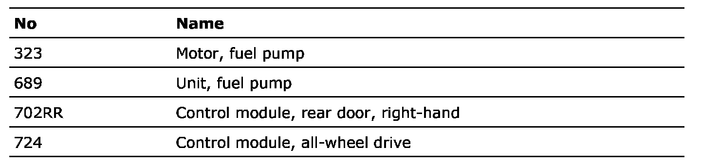

Crimp J358, Main Wiring Harness 4D/5D
Crimp J358, Main Wiring Harness 4D/5D
Location: Approx. 240 mm from branching point to grounding point G34P/S towards RH front door

List of components

Crimp J131, door wiring harness, outer
Crimp J340, diesel tank harness